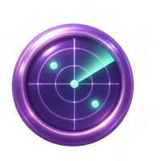
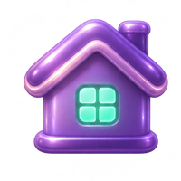
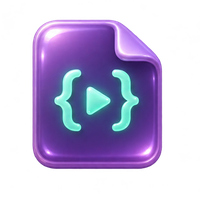
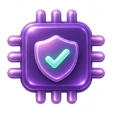

The firmware's interface, running in your browser
This is a port of the device's own drawing code, with its fonts, icons and colours. Click the Cardputer, then press its keys or use your keyboard: ; . , / move, Enter opens, 1-9 jump to a tile.
Prefer a full page? Open the emulator on its own.
What makes it different
OysterOS treats a keyboard handheld with 8 MB of flash as a real computer, with apps, an assistant, a safety model and a test suite, and makes it the hands of an AI agent.
AI with no phone or laptop
The device joins Wi-Fi on its own, keeps its key in internal storage and opens the TLS connection itself.
A physical safety catch
The model can only request typed tools. Anything that changes state waits for a key press on the device.

Recon that is safe by design
Passive Wi-Fi survey, Bluetooth LE discovery and inspection of devices you enrolled. Nothing that disturbs others.

Home and PC on nine keys
An infrared remote, Home Assistant behind an allowlist and a shortcut deck for your PC, with an audit log.

Python on the device
A sandboxed interpreter runs scripts from the SD card. File hooks fail closed and sleeps are capped.

Engineered like a product
About 2,500 automated tests, a simulator checked against the firmware and written architecture decisions.